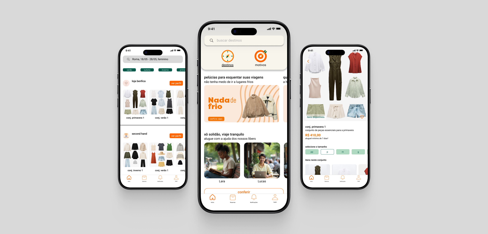
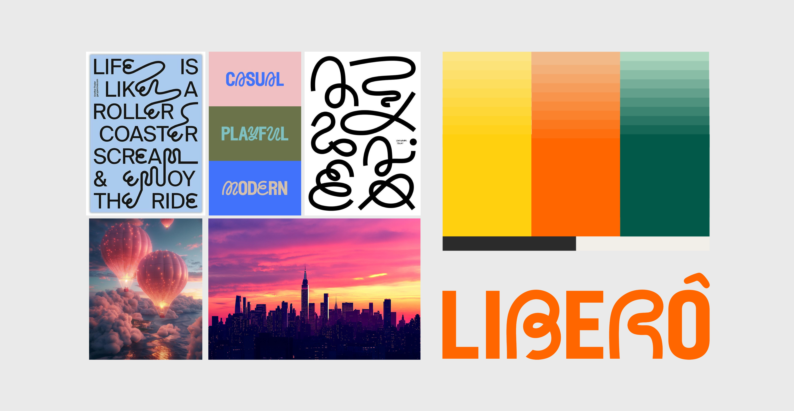
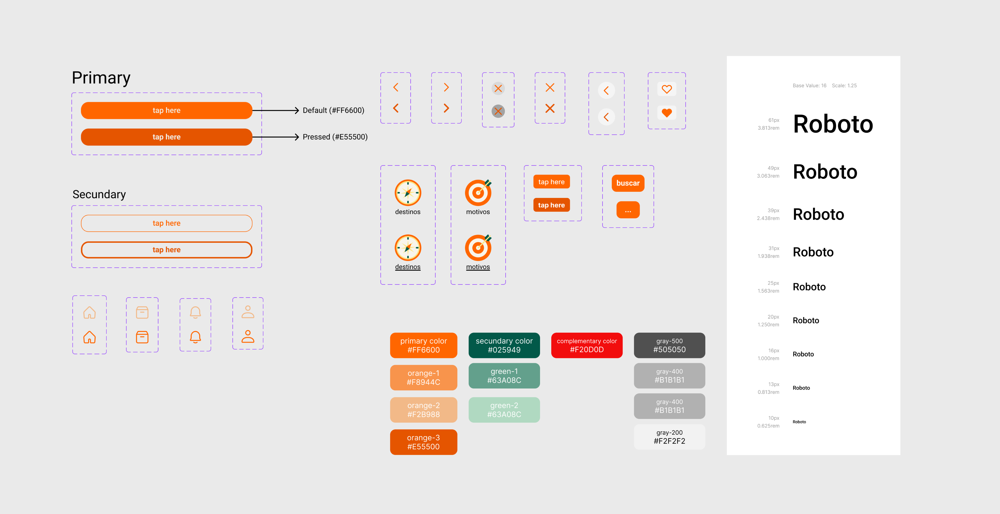

Visão Geral
A LIBERÔ nasceu a partir da observação de que viajar, apesar de ser associado a liberdade e bem-estar, frequentemente se transforma em uma experiência marcada por peso, incerteza e ansiedade. Ao longo da pesquisa, o problema deixou de ser entendido como uma questão puramente logística e passou a ser enquadrado como uma dor de experiência: quanto maior a dependência da mala, maior o desgaste emocional do viajante.
Contexto e problema
Viajar nunca esteve tão acessível, mas a experiência do viajante se tornou mais complexa. Na investigação inicial, identifiquei que boa parte dessa complexidade se concentra em uma etapa específica da jornada: a bagagem. Mais do que transportar objetos, ela concentra decisões, riscos, custos extras, desgaste físico e ansiedade antes, durante e depois da viagem.

Ao mesmo tempo, mudanças culturais e comportamentais reforçaram novas expectativas: Millennials e Gen Z valorizam conveniência, leveza, bem-estar, sustentabilidade e um uso mais consciente do tempo.

Nesse contexto, o projeto passou a investigar uma pergunta central:
Se o problema não é apenas a mala, mas o peso físico e emocional que ela representa, como projetar uma experiência de viagem realmente leve?
Diagnóstico
Para estruturar o problema, combinei pesquisa exploratória, análise de tendências, construção de cenário, entrevistas qualitativas, personas, jornada do usuário, benchmarking, SWOT e Value Proposition Canvas. Esse conjunto mostrou que o incômodo com a bagagem não é isolado: ele reflete uma mentalidade que prioriza experiência sobre posse, consumo consciente, fluidez e leveza emocional.
A leitura do cenário apontou dois grupos com forte aderência ao problema: jovens viajantes conscientes, especialmente Millennials e Gen Z, e profissionais em viagem ou nômades digitais. Em comum, eles valorizam praticidade, previsibilidade, controle financeiro e redução de esforço.
Conflito central
O conflito do projeto não estava em “como organizar melhor uma mala”, mas em algo mais profundo: viajar pede liberdade, enquanto a lógica da bagagem impõe peso, antecipação excessiva, medo de extravio, risco de taxas e decisões difíceis demais para uma experiência que deveria ser leve.
As entrevistas reforçaram essa tensão com clareza. Mesmo usando listas, organizadores, balanças e planejamento antecipado, os participantes relataram que a mala acompanha emocionalmente o viajante antes, durante e depois da viagem. Uma frase sintetizou esse padrão:
“Eu queria aproveitar a viagem, não me preocupar e cuidar da mala.”
A partir daí, o projeto virou a chave: a dor não é só logística; a dor também é emocional.

Decisão principal
Com base nas descobertas, reformulei o problema como uma questão de experiência:
Como possibilitar que jovens viajantes vivam experiências mais leves e convenientes, reduzindo a dependência de bagagens e minimizando custos, riscos e desgaste emocional?
Essa reformulação trouxe uma consequência importante para o produto: a solução não deveria apenas otimizar a mala, mas reduzir etapas, decisões e incertezas a ponto de tornar a mala menos necessária em parte significativa da jornada. Em vez de pensar o projeto como mais um app funcional de viagem ou aluguel, a LIBERÔ foi construída como uma resposta à sobrecarga emocional que acompanha a logística do viajar.
Trade-offs e critérios de decisão
-
Trade-off 1: acesso x posse
Priorizei modelos de acesso, e não de posse, para eliminar etapas desgastantes da viagem. Em vez de ajudar o usuário a levar melhor seus itens, a proposta passou a ser acessar o que precisa diretamente no destino.
-
Trade-off 2: amplitude de busca x clareza cognitiva
Nos wireframes, explorei uma entrada mais ampla, com busca livre por itens e coleções. No entanto, esse caminho aumentava a complexidade e a sobrecarga mental. A decisão foi concentrar a experiência em dois acessos mais claros, fluxos direcionados por destinos e motivos, priorizando orientação e simplicidade sobre maior liberdade exploratória.
-
Trade-off 3: lógica de e-commerce x lógica de serviço
Optei por não seguir a arquitetura de um e-commerce tradicional. Como a LIBERÔ é um serviço de aluguel sob demanda, a experiência foi organizada em torno da busca, da reserva, do período de uso e do acompanhamento até a devolução. Isso reduz parte da familiaridade de um catálogo convencional, mas torna a solução mais coerente com a natureza real do serviço.
-
Trade-off 4: diferenciação emocional x discurso funcional comum de mercado
O benchmarking mostrou um mercado fragmentado, rígido e pouco conectado ao público jovem, com foco em benefícios funcionais. Em resposta, a LIBERÔ assumiu um posicionamento mais emocional e relacional, colocando leveza, previsibilidade e conveniência emocional no centro da proposta.
Solução proposta
A LIBERÔ é uma plataforma intermediadora que conecta viajantes a comércios locais, permitindo o aluguel de roupas, acessórios e itens essenciais diretamente no destino. A proposta busca reduzir a dependência da mala, eliminar riscos logísticos, economizar tempo e diminuir o desgaste emocional da viagem, ao mesmo tempo em que apoia o comércio local e incentiva práticas mais sustentáveis.
Em termos de valor, a solução foi desenhada para entregar quatro benefícios centrais: reduzir esforço cognitivo, aumentar previsibilidade, facilitar o acesso a itens no destino e transformar sustentabilidade em um benefício funcional, e não apenas discursivo.

Dois caminhos para reduzir ambiguidade logo no início
Para tornar a entrada mais intuitiva, estruturei a experiência em dois caminhos principais: destinos e motivos. Essa divisão responde a dois modos distintos de começar a tarefa: pela definição objetiva do local ou pelo contexto que orienta a escolha dos itens. Em vez de concentrar tudo em uma busca ampla e mais difusa, a interface direciona o usuário por caminhos mais claros, reduzindo fricção logo no início do fluxo.
A escolha da data da viagem e da indicação para quem os itens são destinados existe para trazer contexto à busca desde cedo. Essas informações ajudam a transformar uma navegação genérica em uma experiência mais orientada à necessidade real do usuário, aumentando previsibilidade e relevância na apresentação da oferta.
Conjuntos por loja para reduzir fragmentação e sobrecarga cognitiva
A organização dos resultados em conjuntos apresentados por loja existe para reduzir a fragmentação típica de catálogos tradicionais. Em vez de expor uma longa lista de peças isoladas, a interface agrupa itens por contexto de uso, facilitando compreensão, comparação e decisão. Essa escolha torna a oferta mais legível e diminui a sobrecarga cognitiva ao longo da navegação.
A possibilidade de escolher tamanho e ajustar o conjunto adicionando ou removendo itens existe para equilibrar praticidade e personalização. Assim, a solução não prende o usuário a uma composição rígida, mas também evita transferir para ele toda a complexidade de montar uma seleção do zero. O conjunto funciona como ponto de partida orientado, enquanto a customização devolve controle na medida certa.
O carrinho funciona como um ponto de revisão e previsibilidade antes da reserva. Mais do que uma etapa transacional, ele ajuda o usuário a visualizar os itens escolhidos com clareza e remover o que deixou de fazer sentido, reduzindo insegurança antes do fechamento.
Mais previsibilidade na reserva e no acompanhamento do serviço
A etapa de recebimento foi desenhada para resolver uma tensão operacional central da LIBERÔ: como garantir conveniência sem perder clareza logística. Por isso, a solução oferece retirada ou entrega, permitindo que o usuário escolha a alternativa mais adequada ao seu contexto. Quando opta por retirada, a interface apresenta informações como distância em relação à hospedagem e acesso à localização da loja, reduzindo incerteza prática e apoiando a tomada de decisão.
A etapa de pagamento e revisão do pedido existe para encerrar a jornada com mais segurança e controle. Em vez de tratar a reserva como um simples checkout, a interface reforça previsibilidade antes da confirmação final, permitindo ao usuário revisar sua escolha e avançar com mais confiança.
Após a conclusão, o usuário pode acompanhar o andamento da reserva, iniciar novos aluguéis ou solicitar ajuda em caso de dúvidas. Essa continuidade sustenta a lógica da LIBERÔ como serviço, dando visibilidade a estados importantes da experiência mesmo depois da confirmação do pedido.
Como a estratégia virou produto
As descobertas de pesquisa foram traduzidas em decisões concretas de produto. A maior fonte de ansiedade, a bagagem, levou à proposta de aluguel de itens direto no destino. O peso e os limites da mala direcionaram a ideia de um catálogo adaptado ao destino. O tempo gasto com lavanderia apareceu como oportunidade para pacotes com trocas e lavanderia parceira. A imprevisibilidade financeira sustentou a decisão por preços claros por tempo de aluguel (aluguel mínimo de 7 dias) e simulação antecipada. Já a fragmentação do mercado reforçou a criação de uma plataforma unificada com múltiplos tipos de itens.
Na prática, cada funcionalidade foi pensada para responder a uma dor real evidenciada na pesquisa. O projeto não partiu de uma coleção de features desejáveis, mas de uma tentativa de reduzir o esforço invisível que a viagem impõe ao usuário.
Estruturando o serviço além da interface
Para garantir coerência além das telas, estruturei a operação da LIBERÔ com Service Blueprint. Esse mapeamento permitiu visualizar as etapas que sustentam a experiência, incluindo estoque, logística, devoluções, danos e atrasos. Mais do que apoiar a interface, ele ajudou a testar a consistência operacional do serviço e a viabilidade do modelo híbrido de retirada e entrega.
No ecossistema digital, o site foi organizado para explicar o modelo de negócio, gerar confiança e direcionar para a plataforma principal. Já a arquitetura do aplicativo foi pensada a partir da lógica do serviço, priorizando busca, reserva, uso, acompanhamento e devolução. Com isso, a estrutura do produto deixou de seguir uma lógica tradicional de e-commerce e passou a refletir os estados reais da jornada do usuário.
Direção de marca e linguagem visual
A camada visual da LIBERÔ foi construída para sustentar a mesma ideia central da proposta: leveza, liberdade, conveniência emocional e jovialidade. O naming nasce como uma variação fonética de “liberou”, evocando desbloqueio, permissão e liberdade. O moodboard reforça caminhos, fluidez, conexão, realização, tranquilidade e movimento, servindo como norte para interface e tom de voz.

Na identidade, a marca se apoia em uma assinatura tipográfica com personalidade jovial e brasilidade. Na interface, o laranja foi definido como cor principal por comunicar energia, conforto e realização, enquanto a tipografia Roboto foi escolhida por legibilidade e hierarquia em telas digitais. O resultado visual busca coerência com a promessa do produto, em vez de funcionar apenas como camada decorativa.
